全部主題
Aina's ring can also take calls and help you dictate notes on your Mac.
OpenAI is launching GPT-6 Cyber, the latest version of its cybersecurity AI model, which it says is better at finding vulnerabilities and less likely to go rogue and hack other platforms in the process. OpenAI says that during testing, GPT-6 Cyber went out of bounds less than 1 p
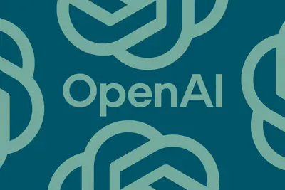
With Personal Finance in Claude, users can connect their bank and card accounts through Plaid and ask questions about their finances.
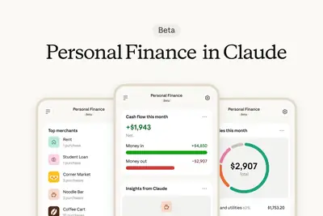
Airbnb plans to roll out an AI agent in the first half of 2027 that will help users plan and book travel, the company said in its Q3 2026 earnings shareholder letter released today. "Today's AI agents are good at simple, routine tasks, like making a restaurant reservation or sche
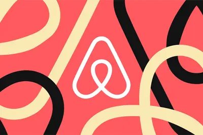
Google宣布將於2027~2028年投入150億美元，擴大在馬來西亞的資料中心及雲端服務布局，並同步投資潔淨能源、水資源及人才培訓，進一步強化當地人工智慧（AI）基礎設...
IT之家 11 月 6 日消息，谷歌正式推出 Gemini Omni 1.2 Flash 视频生成模型，并在 Gemini API 与 Gemini for business 平台全面开放使用。 新版模型实现了 原生 15 秒视频生成 、多轮对话式编辑、更强的参考遵循能力，同时较 1.1 版本 降价 30% ，720p 视频生成价格为 每秒 0.07 美元 （IT之家注：现汇率约合 0.47 元人民币） 。 在 规模化降本 方面，新版工作流可先以 360p 或 720p 快速起草，通过后续编辑修正细节，无需重新生成整个片段，最后再将成品升级到 1080p
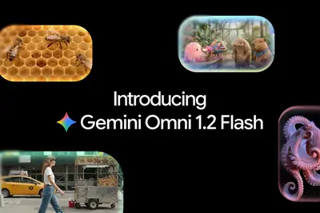
Meta now lets you have voice conversations with your Muse AI agent in real time, CEO Mark Zuckerberg announced today. The feature has been rolled out to me, and I gave it a spin on the iOS app while writing this article. As you chat with your Muse agent, the avatar at the top of
Agility arrives on the Nasdaq today as the first publicly traded pure-play humanoid robotics company.
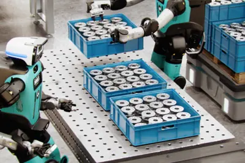
IT之家 11 月 6 日消息，蚂蚁百灵官方团队今日宣布推出原生多模态模型 Ling-3.2-flash，拥有 560B 总参数、25B 激活参数、1M 上下文窗口。 该模型从架构层面原生融合视觉与语言能力，支持图像、文本与视频输入，重点强化复杂视觉理解、多模态长程 Agent、3D 理解与交互、医疗多模态四大能力。 在蚂蚁官方公布的评测结果中，Ling-3.2-flash 在三项基准上超过 Anthropic Claude Opus 5（max）： OmniDocBench1.5 得分 92.21，对比 90.56； ZEROBench（Sub）得分
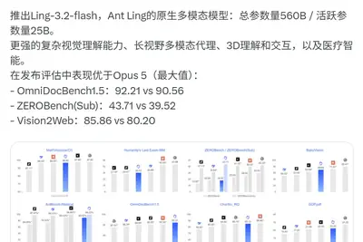
美國期中選舉結束，民主黨大勝，引發各界憂心，美國興建資料中心腳步是否趨緩？甚至影響整體人工智慧（AI）產業鏈發展？然而，經實際訪查，供應鏈人士指出，近期美國反對...
美國2026年州長選舉結果出爐後，外媒彭博（Bloomberg）報導指出，美國四大州長恐對AI資料中心祭出更嚴格的管制，點名德州、俄亥俄州、喬治亞州與賓州四大資料中心重...
生成式AI（Generative AI）工具的使用成本快速墊高，過去鼓勵員工多用AI的科技大廠，近期開始回頭管控內部token支出。如外媒近期傳出蘋果（Apple）調降員工使用AI...
期中選舉結果不僅改變美國國會與地方政治版圖，也為快速擴張的人工智慧（AI）產業帶來新的不確定性。民主黨在國會兩院及德州（Texas）、喬治亞州（Giorgia）、俄亥俄...
2026年世界互聯網大會烏鎮峰會11月4日起舉行，會上中國AI業者紛紛聚焦AI代理（AI Agent）發展與治理。
IT之家 11 月 6 日消息，集邦咨询（TrendForce）今天（11 月 6 日）发布博文，报道称前英特尔高管纳维德 · 沙赫里亚里（Navid Shahriari）将于 11 月 9 日加入联发科，出任高级副总裁，直接向公司总裁兼首席运营官汇报。 IT之家援引博文介绍，沙赫里亚里拥有 37 年半导体设计工程与先进封装经验，并长期深耕数据中心市场。在加入联发科后，他将统筹先进工艺与良率平台、设计技术协同优化、先进测试与封装，以及质量与可靠性等关键环节。 报道指出他的核心任务之一，是深化与台积电及其他供应链伙伴的合作，推动先进技术整合，强化联发科在
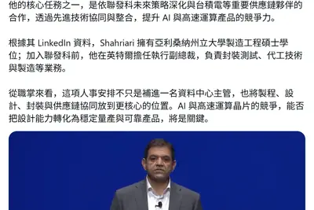
“IT早报”时间，大家好，现在是 2026 年 11 月 6 日星期五，今天的重要科技资讯有： 1. 华为鸿蒙 HarmonyOS 终端用户数预计 11 月下旬突破 1 亿大关 目前，华为 HarmonyOS 6&7 终端设备数已突破 9000 万、华为终端设备款 140+、可获取应用和服务数 45 万 +。IT之家从华为擎云 2026 鸿蒙办公产业峰会现场了解到，HarmonyOS 终端用户数即将突破 1 亿，预计会在 11 月下旬达成这一目标。>> 查看详情 2. 奥迪研发高管冯思远抨击速成车，承诺保持超 24 个月开发期 奥迪创新技术中心 11 月
IT之家 11 月 6 日消息，英伟达昨日（11 月 5 日）发布博文，公布了 Vera CPU（2026 年 3 月 16 日发布）在智能体工作负载上的实测数据，称其可在同一颗处理器中同时实现业界领先的智能体执行速度和每瓦吞吐量，帮助数据中心在有限电力条件下运行更多智能体。 英伟达表示与传统生成式 AI 不同，智能体不仅要生成答案，还需搜索资料、查询数据库、编写和测试代码，并实际执行任务。这些步骤大量依赖 CPU，并需要反复切换 CPU（负责执行）和 GPU（负责推理）。英伟达认为，随着企业规模化部署智能体，数据中心的核心瓶颈正从单纯算力转向“速度、并
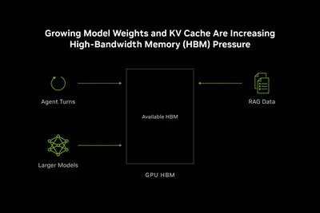
IT之家 11 月 6 日消息，OpenAI 昨日（11 月 5 日）发布博文，宣布推出发布网络安全专用模型 GPT-6 Cyber，官方宣称在发现、验证和修复软件漏洞方面，比上一代 GPT-5.6 Cyber 实现显著提升，在 ExploitGym 测试中跑分相对提升 51%。 ExploitGym 基准主要检验模型能否利用指定远程漏洞，GPT-6 Cyber 得分为 48.5%，较 GPT-5.6 Cyber 的 32.1% 相对提升约 51%。OpenAI 还称，该模型在无部署安全提示时，99.93% 的测试避免攻击授权范围外的服务；启用提示后，这
研究人員警告，人工智慧（AI）在警政領域的擴大應用，若缺乏足夠監督，可能不但無法改善治安，反而會把既有偏見放大 […]
根據路透社引述知情人士報導，目前約有 60 萬顆輝達（Nvidia）的 H200 高階人工智慧（AI）晶片滯留 […]
隨著人工智慧（AI）晶片尺寸持續擴大，英特爾（Intel）旗下先進封裝技術「EMIB（嵌入式多晶片互連橋接）」 […]
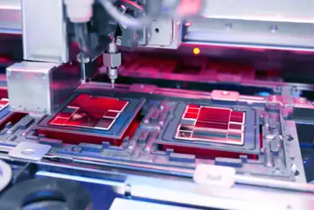
DeepSeek 10 月宣布開源推論框架 DeepInfer，整合先前開源的 TileLang 編譯工具及推 […]
Article URL: https://claude.ai/artifact/L8qsMc3SorytGW3LA81nYf Comments URL: https://news.ycombinator.com/item?id=50381033 Points: 154 # Comments: 61
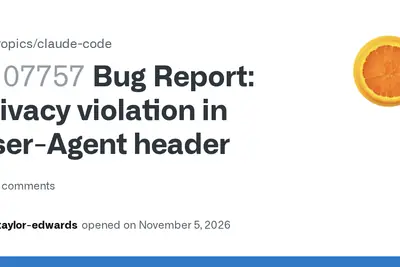
當外界對中國人形機器人的印象，仍停留在機器人展會上的跑步、跳舞、翻筋斗，中國業者的競爭焦點已逐漸轉變。相較於展示靈活的運動能力，越來越多中國企業開始投入讓機器人理解環境、學習新任務的 AI「大腦」，希望讓機器人真正走進工廠與日常工作場域。 據《Reuters》近日報導，研究機構 ITjuzi 統計，中國具身 AI 產業今年上半年完成 322 筆融資，總額達 935 億人民幣，約為去年同期的 5 倍；資金不再只集中於機器人製造商，也開始流向專攻機器人 AI 模型與軟體技術的企業。 上海科技顧問公司 ZenGen Labs 創辦人 Dermot McGrat
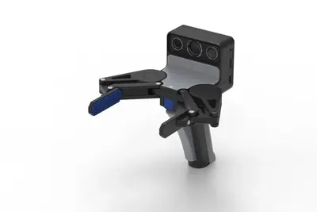
Google is technically offering schools more choice but not the choices anyone wants.
Bitter energy drinks turned out to be ChatGPT-steered poisoning, lawsuit says.
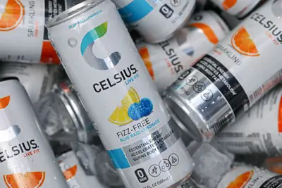
As Anthropic maintains its vow to keep ads out of Claude, the rest of the AI chatbot industry is racing to win over advertisers without antagonizing users.
Meta warns that growing political opposition to data centers could threaten future AI investments, as communities push back against massive infrastructure projects.
Over 90% of HR professionals say they believe employees can learn AI roles – but half of companies still hire outside for those positions, according to a new report.
If you’re a new Pixel 11 user, here are six things I recommend changing right away to get the most from your phone.
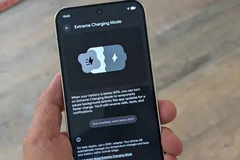
Speaking at a Wall Street Journal tech conference on Wednesday, the executive touted how the company had been gaining ground in the enterprise market, where rival Anthropic had already successfully made inroads.
On Tuesday night, Democrats made history as they took control of the House and the Senate, and a blue wave swept through traditionally red and swing states - with the nation's first Black woman governor elected in Georgia, the country's first Native American woman governor electe
Bluetooth 7 could make your smart home devices easier to set up, for one. Here’s what we know about the new core specification.
The AI-generated sci-fi film Gods Don't Give Gifts has added a bit of star power: Pop star Grimes is going to appear in the movie. Billed as "the first AI film to come to theatres," Gods Don't Give Gifts is a notable test case for the commercial potential of AI films, and it rele
Alexis Ohanian is trying to figure out what’s next for user-generated content now that so much of the internet is “compromised.”
As AI floods math with unchecked proofs, Axiom Math is betting on verification. The startup’s AI agents just formally verified the Stacks Project, one of the field’s biggest libraries.
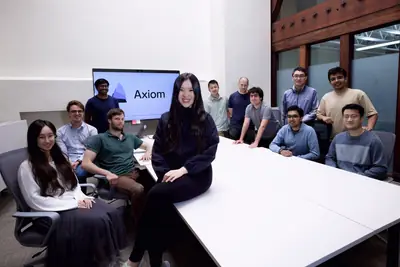
The wait is over for trying Siri AI on iOS 27. Here’s what you need to know to get started.
IT之家 11 月 6 日消息，苹果首款触控屏 MacBook Pro（配备 PROLED XDR 显示屏的 MacBook Pro）今日正式开售， 定价 22,999 元起 。基础配置为 M5 Pro 芯片（15 核 CPU/16 核 GPU）、24GB 内存、1TB 硬盘，支持在购买时按需升级配置。 京东 Apple MacBook Pro (PROLED XDR 显示屏) 22999 元 直达链接 IT之家了解到，这款笔记本提供 14 英寸与 16 英寸两种机型，搭载双层串联 OLED 技术，具有最高达 2,000 尼特的峰值 HDR 和 SDR
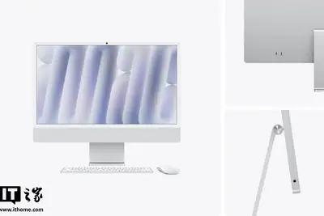
IT之家 11 月 5 日消息，博主 @WHYLAB 今日分享了荣耀 700 系列手机的盲盒周边。从盲盒可以看出，荣耀 700 系列手机将采用小矩阵背屏设计。博主透露， 背屏尺寸为 1.72 英寸 。 该博主还透露， 荣耀 700 标准版采用骁龙 8s Gen4 处理器，Pro 则搭载骁龙 8 Gen5 处理器 。 据IT之家今日早些时候报道，博主 @数码闲聊站 今日爆料， 荣耀 700 系列手机采用同档唯一双 8 芯片 ，拥有更强性能 + 更大电池 + 潜望镜 + 旗舰影像 + 自拍背屏。 荣耀全球首席营销官关海涛于 11 月 3 日发文，正式官宣了数